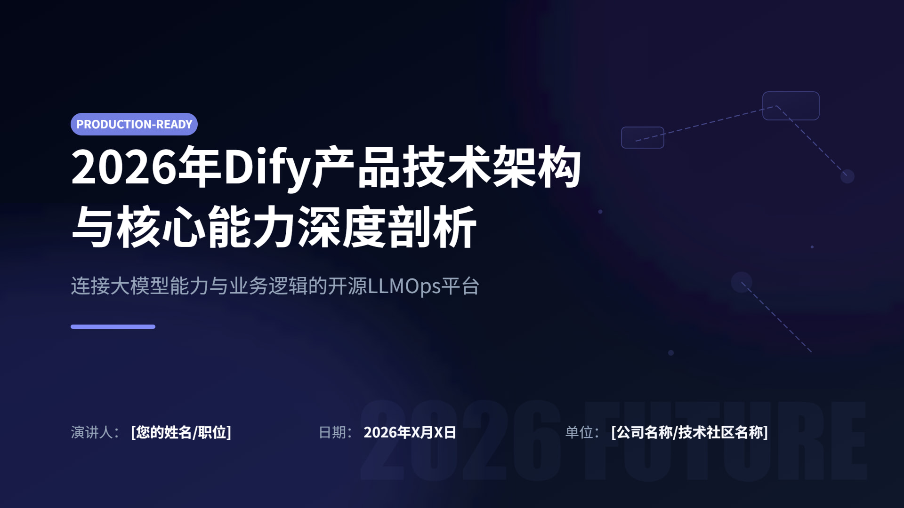
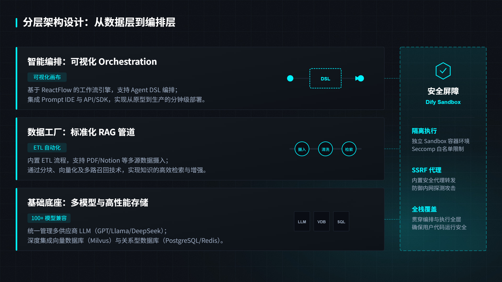
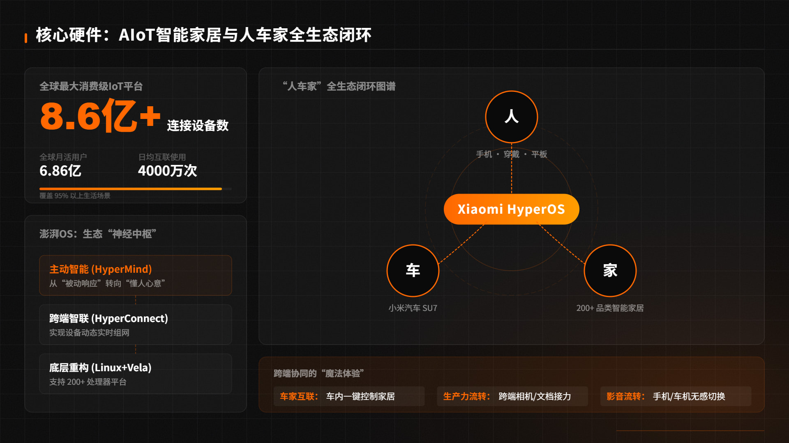
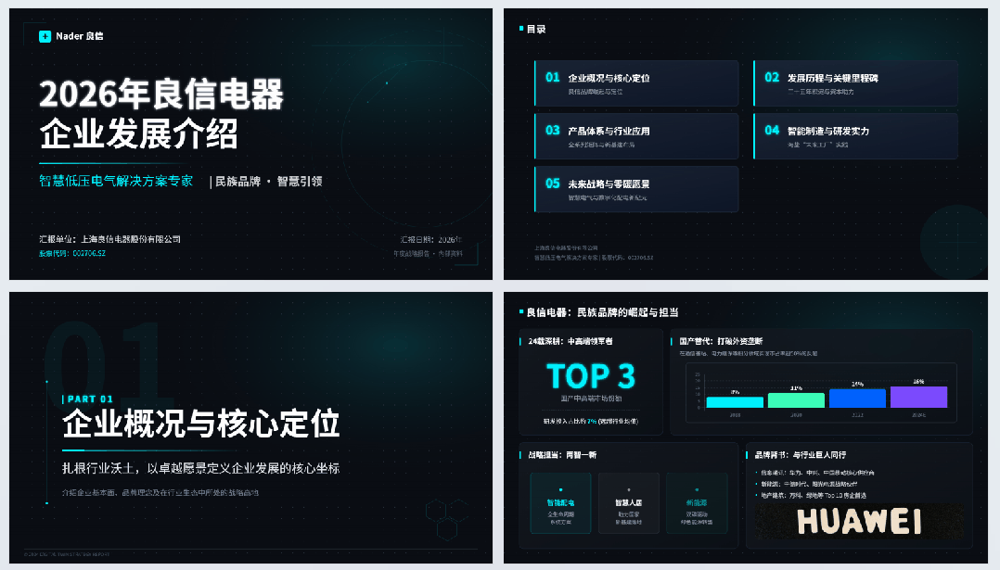

原帖地址：https://linux.do/t/topic/1782304
这篇帖子讲的是：如何把 需求调研 → 资料搜集 → 大纲策划 → 页面策划稿 → SVG 设计生成 这一整套人类级 PPT 工作流交给 AI，让它不再只是模板套壳，而是更像一个真正的 PPT 专家团队。
这篇 Linux.do 帖子分享了一套作者自认为“目前最强”的 PPT Agent 工作流。核心不是简单地输入主题后立刻套模板，而是把人类做高质量 PPT 的流程拆成多个清晰阶段，让 AI 像一个真正的专家团队一样协同完成。

文章先展示了多个 AI 自动生成的页面效果，包括封面、架构图、核心硬件页以及不同风格的设计稿，说明这套系统已经能处理比较复杂的商业级演示场景。
作者强调，第一个关键点是：忘掉“一键生成”，从“提问”开始。与市面上很多 AI PPT 工具一上来就抛出粗糙大纲不同，他认为真正的 PPT 灵魂是内容而不是皮囊。所以 AI 的第一步应该像专业顾问一样做“需求调研”，先上网收集资料，再向用户发问，把“为谁做、做什么、想达到什么效果”聊清楚。

在明确需求后，才进入大纲设计阶段。这里作者把自己多年做复杂 PPT 的“便利贴法”搬到了产品中——每一页都是一张数字便利贴，方便调整顺序、删改结构。这种做法把传统策划工作流变得非常直观，也让 AI 更容易理解整体信息架构。
帖子里还开源了一段正式 Prompt，用来让 AI 扮演“顶级的 PPT 结构架构师”。这个 Prompt 要求模型基于主题和调研信息，使用金字塔原理去生成严格的 JSON 格式大纲，包含封面、目录、分章节页面以及结束页等结构。

第二个关键点是：大量检索资料。作者提到，他们项目因为工程原因用的是国内搜索接口；如果自己 DIY，他非常推荐 Grok，认为它在搜索和信息总结方面极强。做法是把大纲里的小标题逐一丢给 Grok，让它收集并整理所需资料，为后续的 PPT 页面提供高质量内容支撑。
第三个关键点是：PPT 其实还需要“策划稿”。作者回忆自己在顶尖 PPT 设计公司的经历，发现真正昂贵的 PPT 服务里有专门的策划岗位。策划师会负责需求调研、资料检索、大纲规划，并最终产出每一页的页面草稿：元素放在哪、用什么结构、版式如何安排，全都预先定义。作者把这套思路复刻给 AI，让 AI 在设计前先产出清晰的页面规划稿，再做视觉层的设计。
第四个关键点是：用 Bento Grid / 卡片式布局让 AI 跑设计。作者认为卡片式布局有三个巨大优势：一是能装，一页可以承载很多信息；二是灵活，卡片数量和大小都能自由组合；三是 AI 能懂，卡片是 AI 最容易掌握的设计语言之一。于是他把这套布局方法总结成可执行 Prompt，让 AI 能按网格思路生成高质量页面。
在设计实现层面，作者选择了生成整页 SVG，而不是 HTML 或其他更常见方案。原因是 SVG 可以直接拖进 Office 2016 以上版本的 PPT 中使用，兼容性好、可编辑、可无限放大，同时也能兼容更多设计软件。虽然工程代价很大，但长期来看更适合做真正可落地的 AI PPT 产品。

整篇文章最有价值的地方，不是单纯介绍一个“AI 做 PPT 的小工具”，而是在于它强调：AI PPT 不该只是“给大纲 + 套模板”，而应该真正理解人类制作 PPT 的完整工作流：调研、提问、规划、策划、再设计。